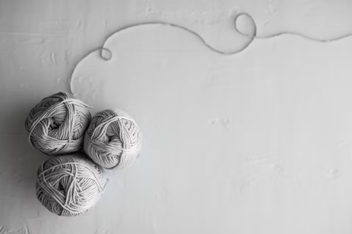
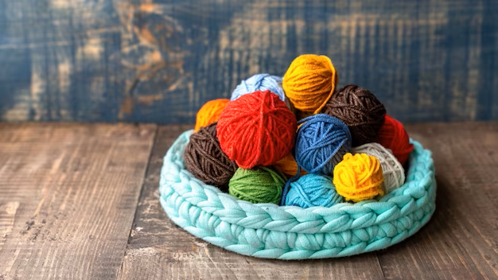
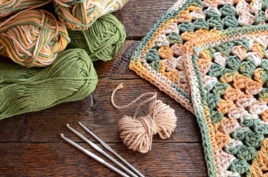

Crochet for Begginners
Modern crochet patterns-free
Modern crochet patterns-free
Until you start to get the hang of crochet and know you want to pursue it as a hobby, you may be hesitant to buy crochet patterns. Fortunately, you can find hundreds of free crochet patterns online for all kinds of creations, from scarves to cute amigurumi dolls. You will likely need to spend a little time learning how to read the patterns—they are typically written with several different abbreviations and terms—but once you know the lingo, you can create nearly any type of project. Try browsing craft blogs or doing a simple Google search, and you will find a range of unique, modern crochet patterns—free!
There is nothing worse than sitting down to start your new hobby, getting a few stitches in, and realizing you do not have everything you need to continue your project. To make it easier on yourself, double check that you have everything you need within arm is reach before you begin.

These all-in-one kits include everything you need to make a particular project, including yarn, crochet hooks, stitch markers, needles, and a pattern. Start with crochet kits for beginners—for projects like throw blankets or scarves—and progress from there!
